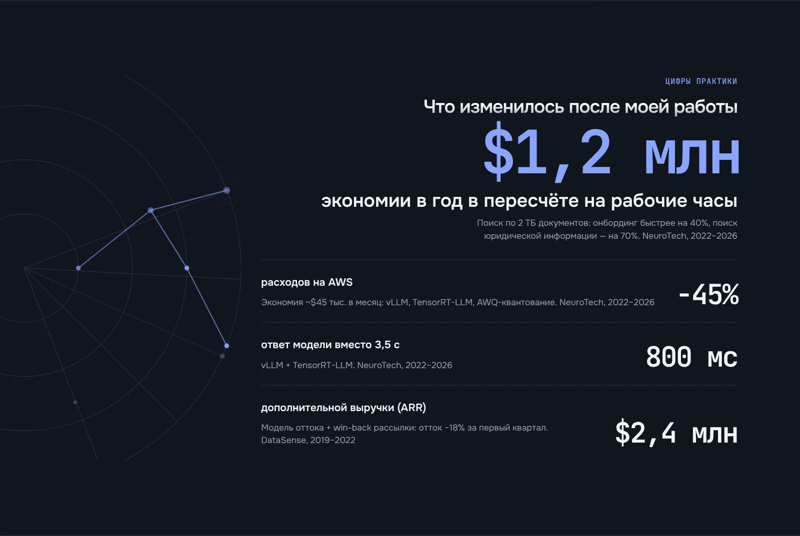
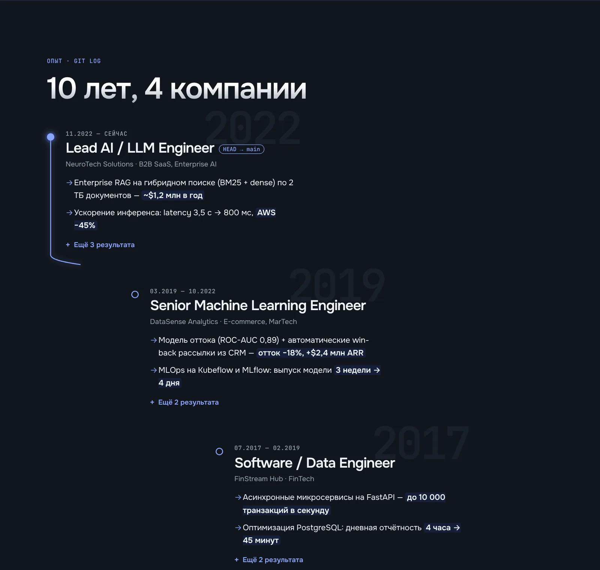
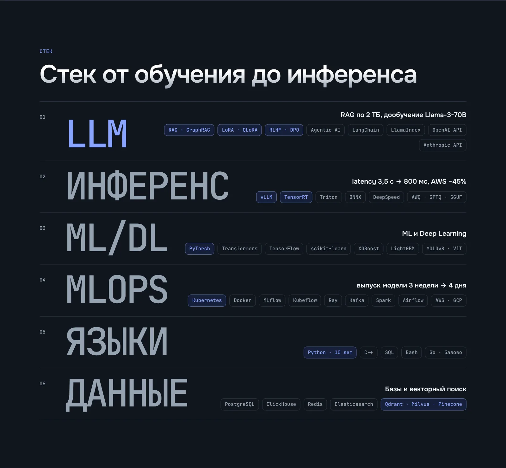
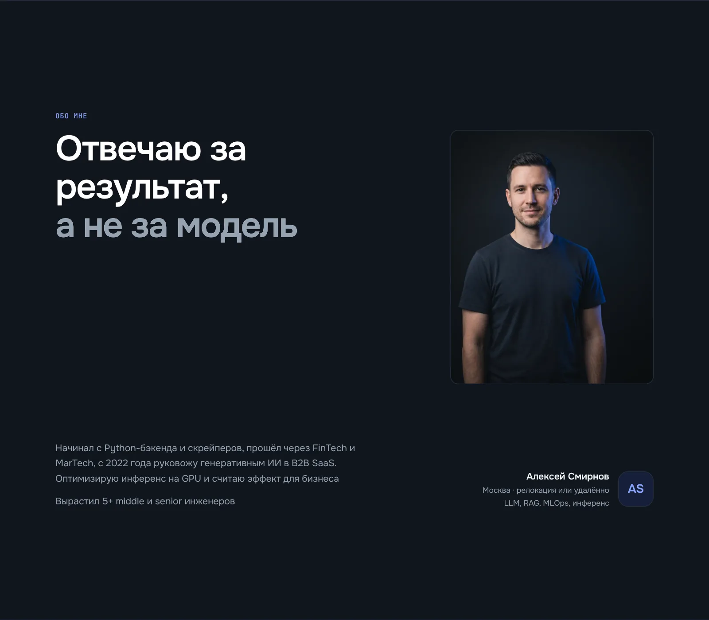
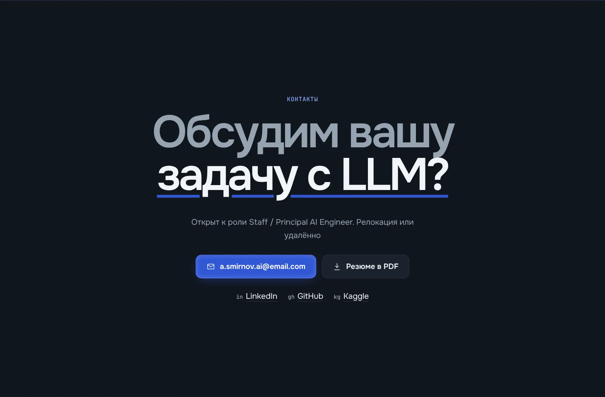
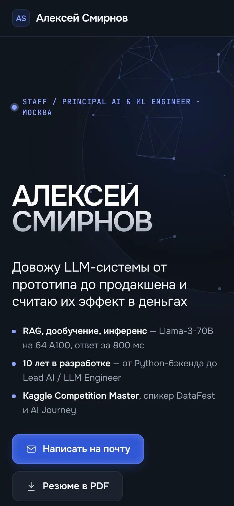
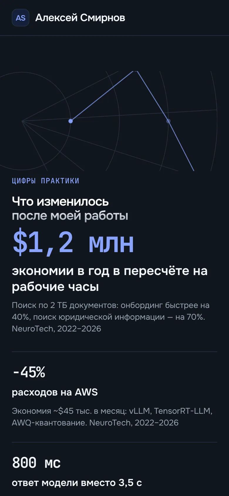
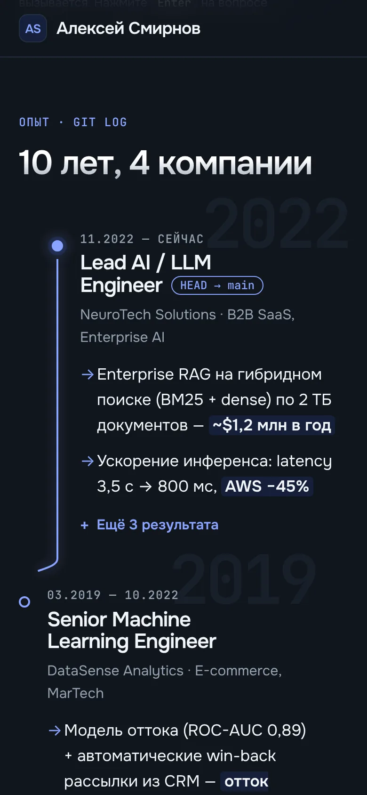

Сайт-визитка ИИ-инженера · одностраничник · 2026
Смирнов
01 / 09 · первый экран · видео
Нейросеть вместо фото
Специализация считывается раньше, чем прочитано имя
02 / 09 · стайл-гайд
Палитра Titanium Grid и шрифты
Тёмный tech-стиль привычен CTO, а кобальт оставлен только для действий
Палитра
Шрифты
03 / 09 · цифры практики
Цифры вместо обещаний
Нанимающий менеджер видит эффект в деньгах до того, как читает опыт

04 / 09 · фирменный блок · видео
Спросите резюме
Навык RAG доказан на самом сайте, а не описан словами
05 / 09 · опыт
Опыт как git log
Карьера читается на языке разработчика, а текущая роль отмечена HEAD

06 / 09 · стек
Шесть категорий вместо облака
Скринер за секунды сверяет стек с вакансией

07 / 09 · обо мне
Позиция вместо биографии
Заголовок отвечает на вопрос о доверии раньше фактов

08 / 09 · контакты
Финал одним вопросом
Один крупный вопрос и одна главная кнопка ведут к письму

09 / 09 · телефон
Мобильная версия
Телефон получил свою раскладку, а не сжатую десктопную



Хочу такой сайт
Соберу сайт под ваш проект
Напишите в Telegram, что за проект и какая задача у сайта. Черновик сообщения уже готов
Хочу такой сайт t.me/maria1moon